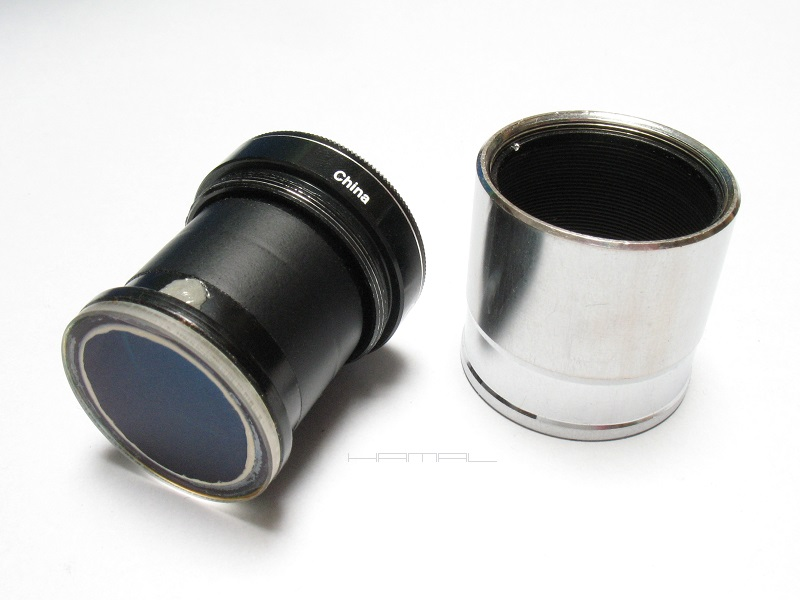
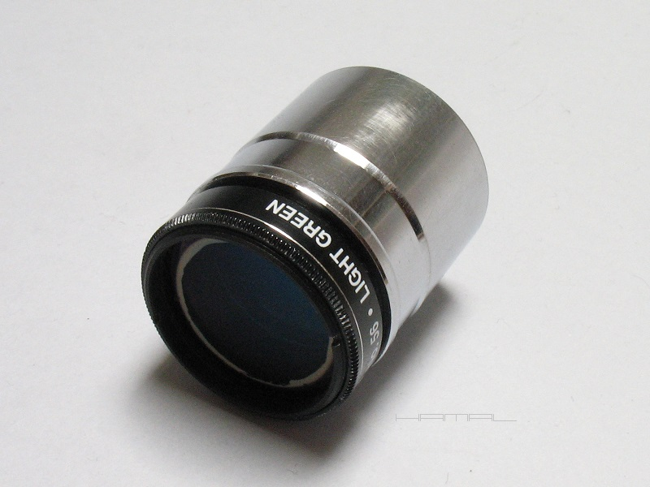
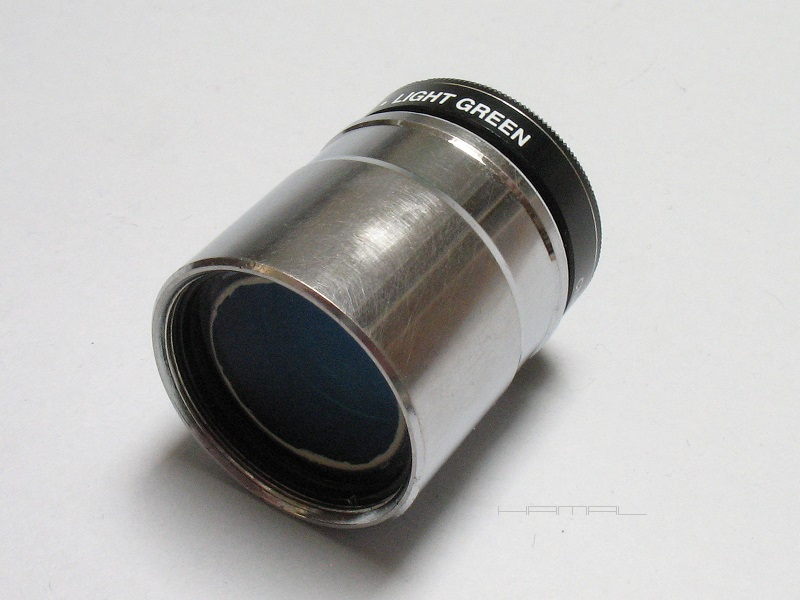
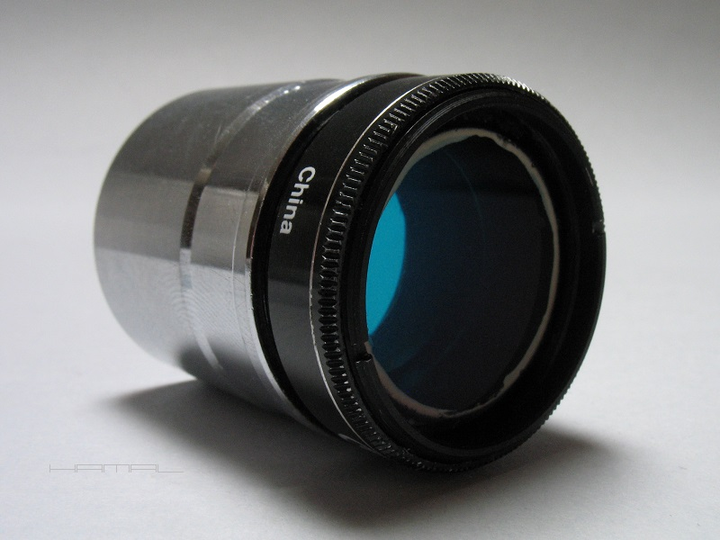
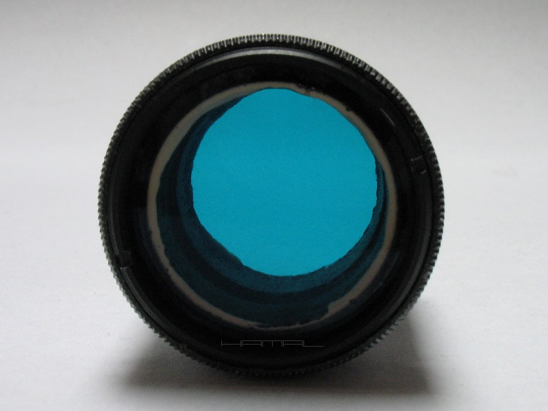
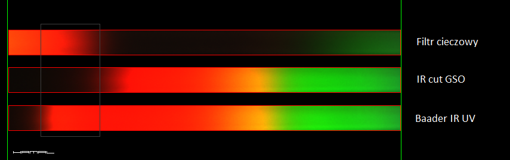
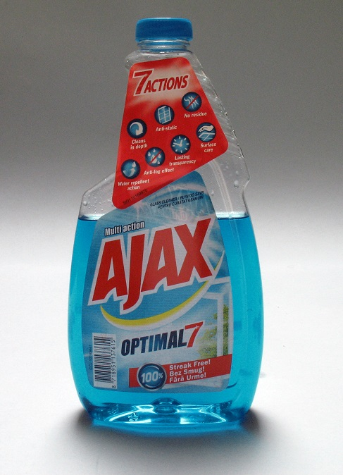

|
WSTĘP . Zgłębiając temat filtrów semi SLOAN zaistniała konieczność wejścia w posiadanie filtra o zakresie pracy nieobsługiwanym przez dostępne na rynku tanie filtry. Do dnia dzisiejszego, nie istnieje lepsza tania alternatywa pod względem zakresu pracy dla filtra g' SLOAN niż opisywany poniżej Filtr Cieczowy AJAX-owy. BUDOWA . Filtr składa się z dwóch sklejonych ze sobą tulei, zamkniętych na obu końcach okienkami Baader Clearglass Filter, wypełnionych cieczą w postaci płynu do mycia szyb AJAX, zwieńczonych na jednym końcu pierścieniem filtrowym 1,25" i umieszczonych w tulei okularowej 1,25". Napełnienie filtra nastąpiło po sklejeniu tulei i zamknięciu ich okienkami, przez uprzednio nawiercony w jednej z nich otworek napełniająco-odpowietrzający. Za pomocą strzykawki z grubą igłą, płyn podawałem bardzo powoli, aby uniknąć powstawania pęcherzyków powietrza. Wyzwaniem był sam koniec procesu, bo mimo odpowiedniego umieszczenia otworka, wewnątrz próbuje zostać jakaś banieczka powietrza, ale kwestią czasu jest, gdy jej szczęśliwe ułożenie przełamie napięcie powierzchniowe i wydostanie się ona otworkiem na zewnątrz. Otworek został zamknięty dedykowanym gumowym koreczkiem, otoczenie koreczka oczyszczone z płynu, a całość dla ostatecznego uszczelnienia zalana widoczną na zdjęciu poniżej porcją Poxipolu.      Płyn AJAX nie został wybrany przypadkowo, gdyż z uwagi na swoje zabarwienie posiada zakres przepuszczalności widma w obrębie niebieskiego i zielonego, czyli akurat takiego, jaki potrzebowałem kompletując zestaw semi SLOAN dla filtra g' zakres ok. 400nm - 550nm. Dopiero idąc w markecie wzdłuż regałów z płynami i szukając tego właściwego, człek dostrzega różnorodność ich kolorów i różnic odcieni. Niestety, wzorem tradycyjnych Wrattenów, filtr taki też od pewnego zakresu przepuszcza podczerwień, ale wycięciem tego zajął się łączony do pary filtr IR-cut GSO. A dlaczego IR-cut GSO, a nie Baader UV/IR Cut / L-Filter, ktoś zapyta. A no dlatego, iż filtr IR-cut GSO podczerwień zaczyna wycinać tam, gdzie zaczyna ją przepuszczać mój Filtr Cieczowy, a filtr Baader UV/IR Cut / L-Filter, zaczyna podczerwień ciąć troszkę dalej, co by sprawiło, że pewien jej zakres by się przedostał do matrycy kamerki. Patrz obrazy ze spektroskopu poniżej.  Rzeczony AJAX :)  PODSUMOWANIE . Dla osiągnięcia stosownej gęstości optycznej filtr musi być dość gruby, co stanowi jego podstawową wadę, fakt ten sprawia, że wykorzystywany może być jedynie z użyciem kamerek o małych matrycach, lub winien być wykonany w standardzie 2". Prezentowane TUTAJ przykłady astrofotograficzne zostały wykonane z zastosowaniem opisanego tu Filtra Cieczowego. 
|